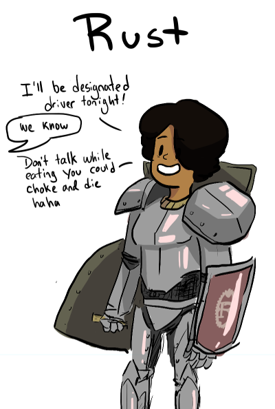

绅士地介绍 Rust

为什么学习一种新的编程语言?
本教程的目标是带您到一个可以读取和写入 Rust 的地方,充分了解在线提供的优质学习资源,特别是这本书这是一个机会 先试后买,并且要充分感受到语言的力量想要更深入.
正如爱因斯坦可能会说的那样,"尽可能简单,但没有慢. "这里有很多新东西要学习,而且不同的是需要重新安排你的心理家具. 通过'gentle'我的意思是这些特征实际上是用实例来表示的;
当我们遇到困难时,我希望了解 Rust 如何解决这些问题. 在解决方案有意义之前理解问题非常重要. 用绚丽的语言说,我们要去一个加拿大的山地国家,我会在路上指出一些有趣的岩层,只有几个地质讲座. 会有一些上坡,但这种看法会令人鼓舞;社区是异常愉快和高兴的帮助rust 用户论坛和一个活跃的Sub reddit这是非常适度的 gentle 常问问题如果你有特定的问题,这是一个很好的资源.
首先,为什么要学习一门新的编程语言? 这是时间和精力的投资,需要一些理由. 即使你没有立即用这种语言找到一份很酷的工作,它也会延伸你的心理肌肉,并使你成为程序员. 这似乎是一种糟糕的投资回报,但是如果你不一直学习一些 真正的 东西,那么你会停滞不前,并且要有十年的经验,一遍又一遍地做同样的事情.
Rust的样子
Rust 是一种静态和强类型的系统编程语言. 静态 意味着所有类型在编译时都是已知的,强类型 意味着这些类型的设计使得编写不正确的程序变得更加困难. 成功的汇编意味着你比牛仔语言更好地保证正确性. 系统 意味着通过完全控制内存使用来生成最佳机器码. 所以这些用途非常硬: 操作系统,设备驱动程序和甚至可能没有操作系统的嵌入式系统. 然而,编写普通的应用程序代码实际上也是一种非常愉快的语言.
与 C 和 C ++的最大区别在于 Rust 安全默认;所有内存访问都会被检查. 不可能因意外而损坏存储器.
Rust 背后的统一原则是:
- 严格执行 安全借用 数据的
- 函数,方法和闭包来操作数据
- 元组,结构和枚举来聚合数据
- 模式匹配来选择和解构数据
- trait 来定义 行为 数据
通过 Cargo 可以有一个快速增长的可用库生态系统,我们将通过学习使用标准库来关注语言的核心原则. 我的建议是写 很多小例子,所以学习使用rustc直接是核心技能. 当我在这段旅程中做示例时,我定义了一个叫做的小脚本rrun它编译并运行结果:
rustc $1.rs && ./$1
配置
本教程假设您已在本地安装 Rust . 幸运的是,这是非常简单.
$ curl https://sh.rustup.rs -sSf | sh
$ rustup component add rust-docs
我会建议获取默认的稳定版本; 稍后可以轻松下载不稳定版本并在两者之间切换.
这得到了编译器,库包管理器,API文档和 Rust 书. 千里之行始于一步,而这第一步是无痛的.
rustup是您用来管理 Rust 安装的命令. 当一个新的稳定版本出现时,你只需说Rust 更新升级. Rust 文件将在您的浏览器中打开离线文档.
你可能已经拥有了你喜欢的编辑器基本的 Rust 支持很好. 我建议你先从基本的语法高亮开始,随着程序变大,开始工作.
我个人很喜欢Geany这是为数不多的具有 Rust 支持的编辑器之一; 它特别易于使用,因为它可以通过软件包管理器获得,但在其他平台上可以正常工作.
最主要的是知道如何编辑,编译和运行防火程序. 你学会用 手指一字一句 你的程序进行编程; 自己键入代码,并学习使用编辑器有效地重新排列事情.
Zed Shaw的忠告关于在 Python 中学习编程仍然很好,不管语言如何. 他说学会编程就像学习乐器 - 秘诀是练习和坚持. 瑜伽和柔道武术也有很好的建议,比如太极拳,感受紧张,但不要过度紧张. 你不是在这里建立傻瓜肌肉.
我想感谢那些关于我坏英语或坏锈建议的许多贡献者,并且感谢 大卫马力诺-David Marino 对他的 Rust 表现的冷静表达,他是一位友善但硬派的无瑕骑士,闪耀着盔甲.
Steve Donovan © 2017-2018 MIT license version 0.4.0